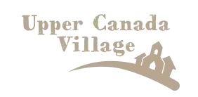
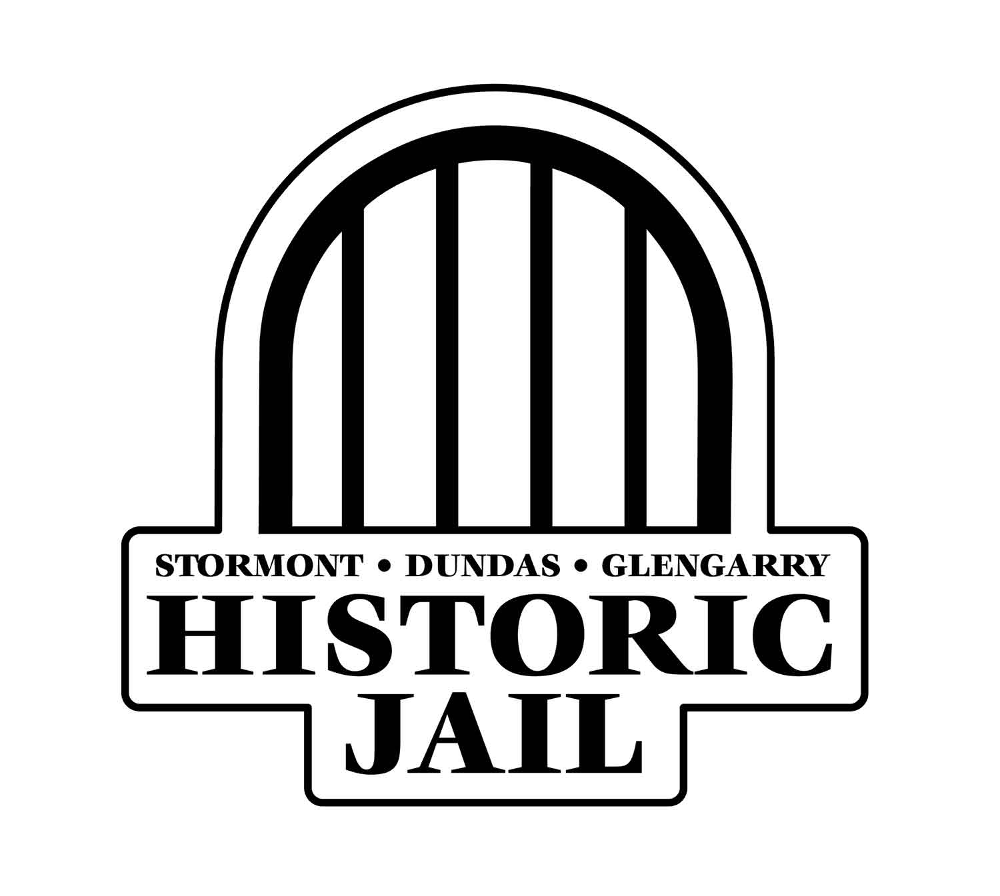
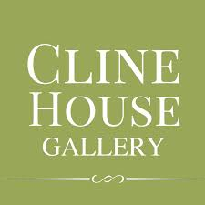

<!DOCTYPE html>
<html lang="en">
<head>
    <meta charset="UTF-8">
    <meta name="viewport" content="width=device-width, initial-scale=1.0">
    <title>The Blue Anchor</title>
    <link rel="stylesheet" href="css/custom.css">
    <!-- favicon -->
    <link rel="icon" type="image/x-icon" href="images/favicon/favicon.ico">
     <!-- favicon -->
    <link
    rel="stylesheet"
    href="https://cdnjs.cloudflare.com/ajax/libs/animate.css/4.1.1/animate.min.css"
  />
     <link rel="stylesheet" href="https://use.typekit.net/dsd4pem.css">
</head>
<body>
    <script src="node_modules/bootstrap/dist/js/bootstrap.min.js"></script>  
</body>

</html>

<!-- nav -->
<script src="node_modules/bootstrap/dist/js/bootstrap.min.js"></script>  
<nav class="navbar navbar-expand-lg">
  <div class="container-lg">
    <a class="navbar-brand text-light" href="index.html">
      </a>
    <button class="navbar-toggler" type="button" data-bs-toggle="collapse" data-bs-target="#navbarNav" aria-controls="navbarNav" aria-expanded="false" aria-label="Toggle navigation">
      <span class="navbar-toggler-icon"></span>
    </button>
    <div class="collapse navbar-collapse" id="navbarNav">
      <ul class="navbar-nav ms-auto">
        <li class="nav-item">
          <a class="nav-link"  href="index.html">Home</a>
        </li>
        <li class="nav-item text-light">
          <a class="nav-link" href="menu.html">Menu</a>
        </li>
        <li class="nav-item">
          <a class="nav-link active" aria-current="page" href="area.html">Area</a>
        </li>
    </div>
  </div>
</nav>
<!-- nav -->

<!-- Hero -->
<div class="menu bg-image rounded-3" style="background-image: url(images/cornwall-and-the-counties.webp); height: 400px; background-position: center; position: relative;">
    <!-- Masking layer -->
    <div class="mask p-5 d-flex align-items-center bg-white opacity-80" style="position: absolute; top: 0; left: 0; right: 0; bottom: 0;"></div> 
  
    <div class="hero-section d-flex justify-content-center align-items-center w-100 h-100 position-relative z-index-2"> 
      <div class="text-center">
        <h1 class="mb-3 hero">Get to Know the Area</h1>
      </div>
    </div>
  </div>
  <!-- Hero -->

  <!-- About Us -->
  <section>
    <div class="p-5">
        <div class="container text-center">
        <div class="row">
            <div class="col-sm">
            <h5>History</h5>
            <p>Welcome to The Blue Anchor, a beloved gem nestled on the scenic banks of the St. Lawrence River just east of Cornwall, Glen Walter, Ontario.  A cornerstone of the local dining scene, The Blue Anchor, which is family owned and operated since 1996, is renowned not only for its stunning views but also for its award-winning offerings that have captured the hearts of both locals and visitors alike. </p>
            </div>
            <div class="col-sm">
            <h5>Landscapes</h5>
            <p>What Glen Walter does have is waterfront – and lots of it. Stretching East when you enter Glen Walter from Cornwall, you will find Gray’s Creek Conservation Area
                and the Cooper Marsh Conservation Area. It is a  cherished wetland is part of the larger Charlottenburgh Marsh - one of the most significant wetlands in all of Ontario.</p>
            </div>
            <div class="col-sm">
            <h5>Activities</h5>
            <p>While visiting The Blue Anchor in Glen Walter, South Glengarry, take the opportunity to explore the many attractions this charming area has to offer.  Just steps from our restaurant, you can stroll along the scenic waterfront paths, perfect for capturing picturesque sunsets or enjoying a peaceful walk. </p>
            </div>
        </div>
        </div>
    </div>
</section>
  <!-- About Us -->

  <section id="community">
    <div class="bg-secondary-subtle text-center align-items-center">
      <div class="container-lg pt-5">
        <div>
        <div class="row">
          <div class="col-4 col-sm-4 pb-5">
            <figure>
              
              <h5 class="fw-semibold pt-3">Upper Canada Village</h5>
              <p>In Morrisburg, Ontario, is a living history museum recreating 1860s rural life. With historic buildings, costumed interpreters, and working mills, it offers an immersive glimpse into Canada's past along the scenic St. Lawrence River.</p>
          </div>
          <div class="col-4 col-sm-4 pb-5">
            <figure>
              
              <h5 class="fw-semibold pt-3">Countryside Adventures</h5>
            <p>Located in Moose Creek, Ontario, offers year-round outdoor fun. Known for its scenic skating trails in winter and paddleboarding, biking, and hiking in summer, it’s a perfect spot for family-friendly adventures in nature.</p>
          </div>
          <div class="col-4 col-sm-4 pb-5">
            <figure>
              
              <h5 class="fw-semibold pt-3">Historic SDG Jail</h5>
            <p>In Cornwall, Ontario, is a museum showcasing the region's criminal justice history. Built in 1834, it features original cells and exhibits about inmates and the justice system. Guided tours offer insights into the jail's intriguing past, making it a must-visit for history enthusiasts.</p>
          </div>
          <div class="col-4 col-sm-4 pb-5">
            <figure>
              
              <h5 class="fw-semibold pt-3">Archie's Family Golf</h5>
              <p> In Cornwall, Ontario, is a fun-filled, family-friendly golf destination featuring an 18-hole miniature golf course. This vibrant facility offers a relaxed atmosphere perfect for all ages, along mini putt and snack options. Whether you're a seasoned golfer or a beginner, Archie's provides a great way to enjoy time outdoors with friends and family.</p>
          </div>
          <div class="col-4 col-sm-4 pb-5">
            <figure>
              
              <h5 class="fw-semibold pt-3">Cooper Marsh Conservation Area</h5>
              <p>Part of the St. Lawrence Parks in Ontario, is a picturesque natural space known for its rich biodiversity and scenic landscapes. This wetland area features walking trails, birdwatching opportunities, and interpretive signage, making it a great spot for nature lovers and outdoor enthusiasts. Visitors can explore diverse habitats while enjoying the tranquility of the marsh and the beauty of the surrounding wildlife.</p>
          </div>
          <div class="col-4 col-sm-4 pb-5">
            <figure>
              
              <h5 class="fw-semibold pt-3">Cline House Gallery</h5>
              <p>Located in Cornwall, Ontario, the Cline House Gallery is a vibrant art space celebrating local and regional talent. Housed in a beautifully restored historic building, it showcases diverse exhibitions, workshops, and events that engage the community with contemporary and traditional art. With its charming ambiance and commitment to creativity, the gallery is a cultural gem for art lovers and visitors alike.
              </p>
          </div>
          
        </div>

      </div>
    </div>
  </div>
</section>

<!-- <div class="d-flex justify-content-end mt-5 mr-5 h-100">
    <div> -->

<div style="position: relative; width: 1225px; height: 450px;">
    <h2 style="position: absolute; bottom: 1px; left: 50px; padding: 10px; border-radius: 5px;">
        Explore SD&G
    </h2>
    <iframe 
        src="https://www.google.com/maps/embed?pb=!1m18!1m12!1m3!1d2819.568286957228!2d-74.63173402470697!3d45.03368857107015!2m3!1f0!2f0!3f0!3m2!1i1024!2i768!4f13.1!3m3!1m2!1s0x4ccc1ac58affc27f%3A0xf3d40ce18cefd219!2sBlue%20Anchor!5e0!3m2!1sen!2sca!4v1733796793283!5m2!1sen!2sca" 
        width="1225" 
        height="450" 
        style="border:0;" 
        allowfullscreen="" 
        loading="lazy" 
        referrerpolicy="no-referrer-when-downgrade">
    </iframe>
</div>


<!-- footer -->
<div class=" bg-secondary-subtle pt-1">
    <footer class="m-5 d-flex flex-wrap justify-content-between align-items-center pb-5 border-top">
      <div>
          
        </a>
      </div>
  
      <ul class="nav justify-content-middle list-unstyled d-flex gap-2">
          <li><a href="https://www.facebook.com/BlueAnchorBarGrill/"></a></li>
          <li><a href="https://www.instagram.com/explore/locations/542850/blue-anchor-bar-grill/"></a></li>
          <li><a href="https://g.co/kgs/e1vzQ3N"></a></li>
        </ul>
      <p class="text-muted justify-content-end">18369 County Rd 2 Cornwall, ON 613-931-1720</p>
  </div>   
  <!-- footer -->